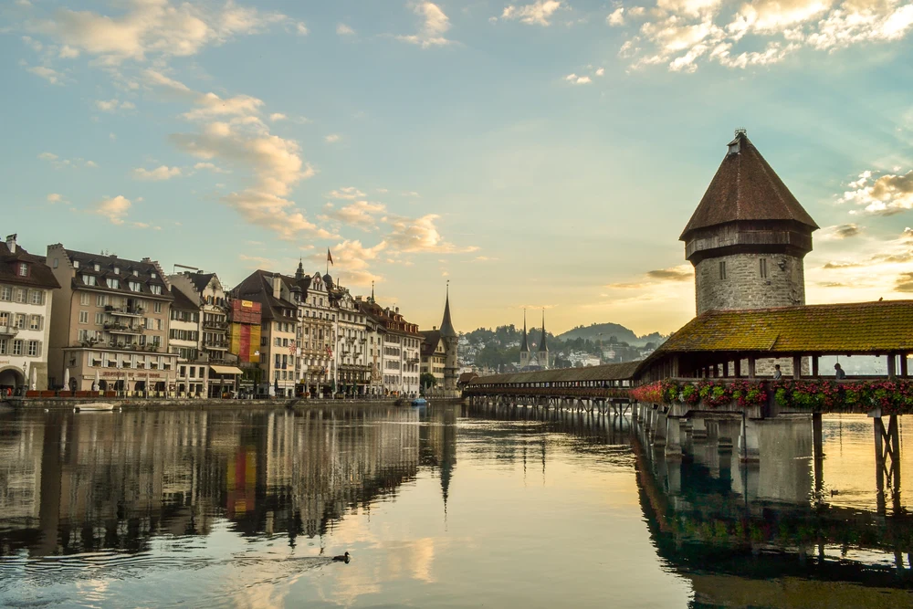
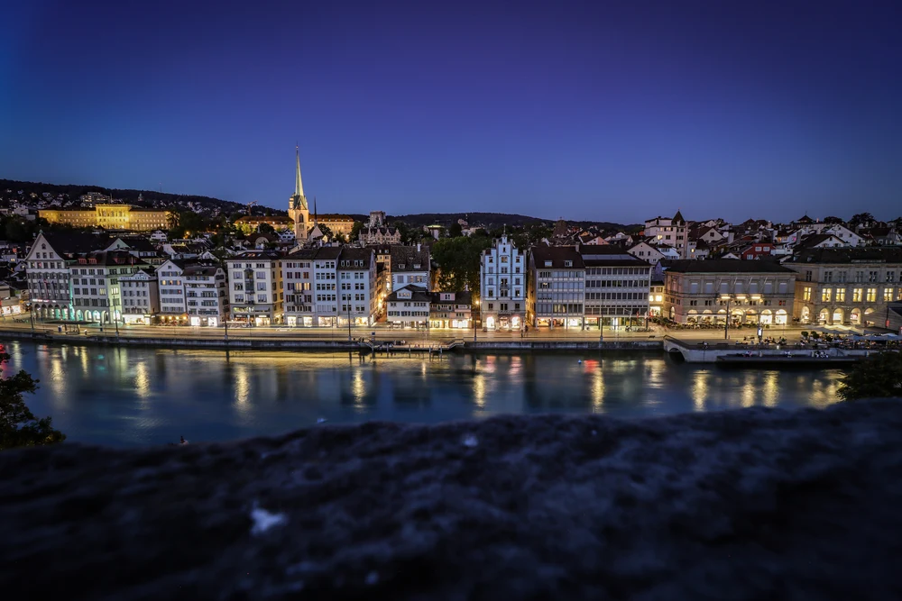

อินเตอร์ลาเคน (Interlaken) เป็นเมืองเล็กๆ ในแคว้นเบิร์น (Bern) ที่ขนาบข้างด้วยทะเลสาบถึง 2 แห่ง คือ ทะเลสาบเบรียนซ์ (Lake Brienz) และ ทะเลสาบทูน (Lake Thun) ด้วยทัศนียภาพอันงดงามราวกับเมืองในฝัน แถมยังตั้งอยู่ตรงจุดที่สามารถเดินทางขึ้นไปยัง ยอดเขายุงเฟรา (Jungfrau) ยอดเขาที่สูงที่สุดในยุโรปที่มีความสูงถึง 4,158 เมตร จึงทำให้เมืองอินเตอร์ลาเคนแห่งนี้เป็นจุดหมายปลายทางของนักท่องเที่ยวหลายๆ คนที่อยากมาพักผ่อน ดื่มด่ำกับเสน่ห์ของเมืองอินเตอร์ลาเคน
| ลำดับ | ภาพสำคัญ | ชื่อเมือง | อ่านต่อ |
|---|---|---|---|
| 1 | ยอดเขาจุงเฟรา(Jungfrau) | อ่านต่อ | |
| 2 |  | สะพานไม้ชาเปล(Chapel Bridge) | อ่านต่อ |
| 1 |  | ลินเดนฮอฟ(Lindenhof) | อ่านต่อ |
| 1 | โบสถ์ฟรอมุนสเตอร์(Fraumunster Church) | อ่านต่อ | |
| 1 | ทะเลสาบเบรียนซ์(Lake Brienz) | อ่านต่อ | |
| Switzerland | |||